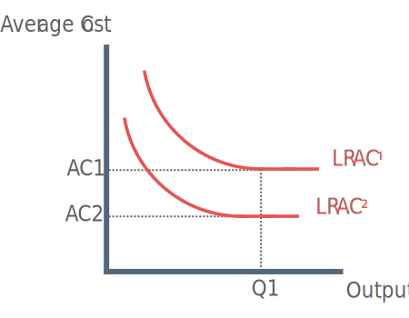

What is Efficiency?
Efficiency is concerned with inputs in relation to outputs. Efficiency describes the process that uses the lowest amount of inputs in order to to produce the greatest amount of outputs. There are a number of different types of efficiency that we will look closer at here.
Types Of Efficiency
Economic efficiency
Economic efficiency concerns the relationship between the inputs to the production process (land, labour, capital and enterprise) and the output they produce.
An economically efficient firm optimally allocated resources to serve each individuals best interest while minimising waste.
Productive efficiency
Productive efficiency entails producing goods and services at the lowest possible average cost with a given amount of inputs. This is represented by any point on the PPF or the lowest point of the AC curve (this implies economies of scale are being fully exploited)
Allocative efficiency
This occurs when goods and services are distributed according to consumer preferences. A firm is allocatively efficient where price equals the Marginal Cost (MC) of production (P = MC). This is because the price consumer's are willing to pay is equal to the marginal utility they get.
An economy could be productively efficient but produce goods that people don’t need and would therefore be allocatively inefficient.
X-inefficiency (technical inefficiency)
American economist Harry Liebenstein introduced the term X-inefficiency in the 1960's. X-inefficiency occurs when firms do not have incentive to cut cost (E.g in monopoly). Therefore average cost is higher than it should otherwise be.
Reasons technical inefficiency could arise:
Lack of co-ordination in the production process
Lack of competition
Lack of profit motive
Divorce of ownership and control = satisficing behaviour
Dynamic Efficiency

Dynamic efficiency is concerned with the future. A firm may devote resources to investment in research and development. New technologies in future will shift LRAC downward, reducing average cost.
Technical efficiency
Technical efficiency involves producing a given quantity at the lowest possible average cost. All points on the LRAC are technically efficient. This implies a firm is producing the maximum level of output from the minimum quantity of inputs.
Static efficiency
Static efficiency is concerned with the most efficient combination of resources at a given point in time. If a firm is both allocatively and productively efficient at same point in time, firm will be statically efficient.
Social efficiency
Where Social Marginal Benefit (SMB) = Social Marginal Cost (SMC) (all externalities are taken into account)